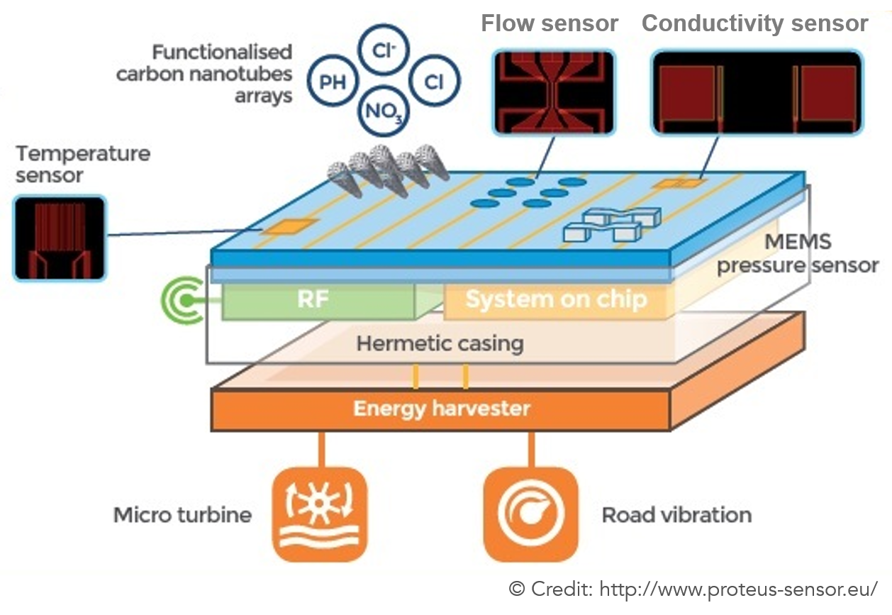

Water Quality Sensors - Startup
Ecole Polytechnique, Paris, France
Attachment 2018. Duration: 2 months
PROTEUS is a project funded under the H2020 framework program for research of the European Commission. It investigates the smart integration of chemical sensors based on carbon nanotubes and micro-electromechanical system (MEMS) -based physical sensors in the context of water monitoring. The consortium counts 4 academic, 5 industrial partners and spans the whole value chain for smart water sensor prototyping (http://www.proteus-sensor.eu/).
Water is the most abandoned compound on the Earth. It covers 71% of its surface. Nowadays, the world is facing a water crisis: half of the world population is under stress conditions because of industrial and agricultural contamination of water resources. Availability of clean water for drinking, reuse, aquaculture and other industrial needs is the primary goal.
Water management requires massive, low-cost monitoring means along the whole value chain from the source to the end users. Digital solutions, integrating information and communications technology to water resources management, have the potential to improve water quality and its availability for consumers worldwide. Water quality monitoring, which is strongly needed, is traditionally slow and expensive. The majority of multifunctional water sensors only supports predefined goals, hindering compatibility, with a high cost, impeding large scale deployments. Today’s multiparameter probes are the bulky assembly of single-parameter probes, with high power consumption, complex and frequent maintenance and calibration, not affordable in large numbers. In telecommunications networks, multiplexing is a method by which multiple analog or digital signals are combined into one signal over a shared medium with the aim to share a scarce resource. Heavily multiplexed water probes are needed for massive deployment of water network monitoring.
|

Addressing industrial needs, cheaper (cost-effective) and smaller (compact) solutions with magnitudes of reduction in size (x 10) and unit cost (x 25) compared to the state of the art have been proposed for the development. To this end, an increased number of functions is packaged into a single chip. Multifunctional system on chip is able to support highly differentiated monitoring goals related to water quality. The project investigates the smart integration of chemical sensors based on nanomaterials, in particular, carbon nanotubes (CNTs) and micro-electromechanical system (MEMS) -based physical sensors into a monolithic (components are in a single integrated circuit) sensing chip in the context of water monitoring. Highly multifunctional sensors array constitutes of up to 31 devices on a single 1 cm² silicon chip: physical micro-fabricated thermo-resistive MEMS, sensing temperature, conductivity, flow rate and pressure and chemical nano-enabled CNTs sensors, selective to different species. |
Water network monitoring is achieved on a real-time basis, with no expertise involved. Multi-parameter sensing chip records parameters and stores the data on-chip. For achieving more reliable and faster water management in the field of water utilities, the smart system design exploits predictive scheme of the device deployment: sensors are endowed with long range wireless technology, connecting a node to the centralized cloud service by means of radio frequency waves. Energy budget autonomy is attained by recovering water flow energy from flux variations within the pipes. To guarantee a complete self-power, energy regeneration system is ensured with a multisource harverster for the connection with other energy origins, such as roads vibrations.
Carbon nanotubes-based resistive chemical sensors array, integrated on a MEMS platform, is in the focus of this research project. CNTs are selected for their potential for high sensitivity (large specific surface area and, as a consequence, high adsorption capability) and superior electrical, mechanical and thermal properties (electron mobility > 100 x silicon; Young’s modulus ≈ 5 x steel; thermal conductivity > 5 x copper). To fabricate each nanosensor in the array, multiwall carbon nanotubes (MWCNTs) are functionalised in a liquid phase by specific molecules (polymers) and then directly ink-jet printed in a random percolating network of MWCNTs on a silicon wafer between electrodes. By ink-jetting in small series, layer by layer, it is possible to tune the deposited CNT film resistance to the desired value. This fabrication method is compatible with low cost, offering manufacturability and reproducibility.
Depending on ink, or functionalization, each sensor is able to selectively and reversibly complex with particular species, i.e. ions dissolved in water. Upon functionalization polymers bound non-covalently with MWCNTs and ensure efficient charge transfer between target analytes (ions dissolved in water) and MWCNTs. When the device is exposed to water containing a mixture of various species, principle of operation is so, in the absence of functionalization, most species interact with the MWCNTs-based devices. In the presence of functionalized MWCNTs, on the contrary, the devices respond selectively to the target analyte due to functionalization.
The system validation is carried out using experimental bench platform, simulating real ambient conditions (temperature, pH, conductivity, dissolved oxygen) to characterize sensors. The core of the work consists of extensive characterization of the sensor array in water with various high resolution equipment. CNTs sensor resistance (electrical response) is monitored as a function of solution concentration and time for different saline solutions. The main purpose of this work is to quantify sensitivity and selectivity of the sensor array to the target analytes throughout the lifetime of the sensor in water. Objective electrolyte ions in aqueous samples include commonly found species in drink and waste water composition: Calcium (Ca2+) and Magnesium (Mg2+) cations, responsible for so called “water hardness”; Potassium (K+) and Sodium (Na+) cations; Chloride (Cl−) and Phosphate (PO4)3− anions, Nitrates (NO3)−, Hypochlorites (ClO)− as well as Copper (Cu2+) and Nickel (Ni2+) heavy metals anions. Through advanced exploitation of characterization data via statistical software, sensitivity to pH, chloride ions, hardness and nitrates has been demonstrated.
Since degradation mechanisms affect nanodevices from the nanoscale of the constitutive components to the macroscale of substrates and electrical contacts, after optimization of the device fabrication procedure (MWCNTs ink formulation over filtration, Argon degassing and viscosity tuning; ink-jet printing settings; gold wire bonding of chips), electrodes reliability assessment is conducted throughout the lifespan of the sensor in water. Surface morphology and damage phenomena mechanisms, involved in the ageing process, are analyzed by means of high resolution confocal microscopy.
Tags:
Nano-enabled Smart Systems, Water Quality Sensing, Microsystems and Nanotechnology, Water Hardness, Electrical Response, Electronic Components and Semiconductor Devices, Carbon nanotubes (CNTs), 3,3'-Dichlorobenzidine (DCBZ), CNTs Functionalization, Polymers, Polyethylene glycol (PEG), Particle Suspension, Integrated Circuit, Nanoparticles, Water Monitoring, Long-range Wireless Sensors, System on Chip, Theory of Electrolytic Dissociation, Adaptive Microfluidic
Equipment in Use:
3D Confocal Microscope Leica DCM8 in Interferometry, Brightfield and Darkfield Modes, Thermo Scientific™ Heraeus™ Megafuge™ 8R Small Benchtop Centrifuge, Fujifilm Dimatix Precision Materials Deposition DMP-2800 Piezoelectric Inkjet Printer, Kulicke & Soffa iBond5000-Dual Semiconductor Assembly Equipment Ball/Wedge Bonder, Merck Millipore Milli-Q® Advantage A10 Ultrapure Water Purification and Monitoring System, Thermo Fisher Scientific™ AC200 Thermal Water Circulating Immersion Bath, Trionyx NF X 15-211 Ductless Fume Hood, Malvern Zetasizer Nano Particle Characterization System, Tektronix Keithley 2612B System SourceMeter® Instument & Tektronix Keithley 3706A-S System Switch/Multimeter, PONSEL ODEON X Handheld Water Quality Meter, Ponsel Digisens Smart pH and Conductivity Water Quality Sensors, I-V & C-V (Current Voltage and Capacitance-Voltage) Wafer Probing Measurement Station, Digital Magnetic Stirring Hot Plate, High Purity Inert Atmosphere Argon Glovebox, Digital Multimeter, Printed Circuit Board (PCB), UV lamp, Beakers System Valves and Pumps Control, Ultrasonic Sonicator, Water Bath
Main Techniques:
Wolfram Mathematica Program Interface Development for Automative Big Data Processing & Analysis, Laboratory Tests of Prototype Devices, Data Analysis, Drop-on-Demand Inkjet Printing, Gold Contacts Bonding, UV and Thermal treatment, Ink Formulation, High-speed Centrifugation, Solution Preparation, Electrical Response Measurements, pH & Conductivity Measurements, High Definition Confocal Microscopy in Interferometry and Brightfield mode, Ultrasonication, Particulate Ink Sterilizing-grade (0.2 µm) Filtration & Ar Degassing & Viscosity Tuning, Surface Preparation, Circuits Electrodes Interconnection, Semiconductor Device Wire Bonding, Water Purification and Monitoring, Dynamic Light Scattering, Nanoparticles Wet Processing